Sección 5 Intervalos de confianza y remuestreo
En la sección anterior, vimos el concepto de distribución de muestreo de una estadística que queremos utilizar para estimar un valor poblacional, y vimos que con esta distribución podíamos evaluar qué tan preciso es nuestro estimador evaluando qué tan concentrada está esta distribución alrededor del valor poblacion que queremos estimar.
Sin embargo, en los ejemplos que vimos la población era conocida: ya sea que tuviéramos toda la población finita disponible (como el ejemplo de las casas), o donde la población estaba definida por un modelo teórico de probabilidad (como los ejemplos de las distribuciones uniforme o exponencial).
Ahora vemos qué hacer en el caso que realmente nos interesa: solo tenemos una muestra disponible, y la población es desconocida. Todo lo que tenemos es una muestra y una estimación basada en la muestra, y requerimos estimar la distribución de muestreo de la estadística de interés. El enfoque que presentaremos aquí es uno de los más flexibles y poderosos que están disponibles para este problema: el método bootstrap o de remuestreo.
En primer lugar explicamos el concepto de intervalo de confianza, que es una manera resumida de evaluar la precisión de nuestras estimaciones.
Ejemplo introductorio
Regresamos a nuestro ejemplo anterior donde muestreamos 3 grupos, y nos preguntábamos acerca de la diferencia de sus medianas. En lugar de hacer pruebas de permutaciones (ya sea pruebas gráficas o alguna prueba de permutaciones para media o mediana, por ejemplo), podríamos considerar qué tan precisa es cada una de nuestras estimaciones para las medianas de los grupos.
Nuestros resultados podríamos presentarlos como sigue. Este código lo explicaremos más adelante, por el momento consideramos la gŕafica resultante:
set.seed(8)
pob_tab <- tibble(id = 1:2000, x = rgamma(2000, 4, 1),
grupo = sample(c("a","b", "c"), 2000, prob = c(4,2,1), replace = T))
muestra_tab <- pob_tab |>
slice_sample(n = 125)
g_1 <- ggplot(muestra_tab, aes(x = grupo, y = x)) +
geom_boxplot(outlier.alpha = 0) +
geom_jitter(alpha = 0.3) +
labs(subtitle = "Muestra \n") + ylim(c(0,14))
## Hacemos bootstrap
fun_boot <- function(datos){
datos |> group_by(grupo) |> slice_sample(prop = 1, replace = TRUE)
}
reps_boot <- map_df(1:2000, function(i){
muestra_tab |>
fun_boot() |>
group_by(grupo) |>
summarise(mediana = median(x), .groups = "drop")},
.id = 'rep')
resumen_boot <- reps_boot |> group_by(grupo) |>
summarise(ymin = quantile(mediana, 0.025),
ymax = quantile(mediana, 0.975), .groups = "drop") |>
left_join(muestra_tab |>
group_by(grupo) |>
summarise(mediana = median(x)))
g_2 <- ggplot(resumen_boot, aes(x = grupo, y = mediana, ymin = ymin,
ymax = ymax)) +
geom_linerange() +
geom_point(colour = "red", size = 2) + ylim(c(0,14)) +
labs(subtitle = "Intervalos de 95% \n para la mediana")
g_1 + g_2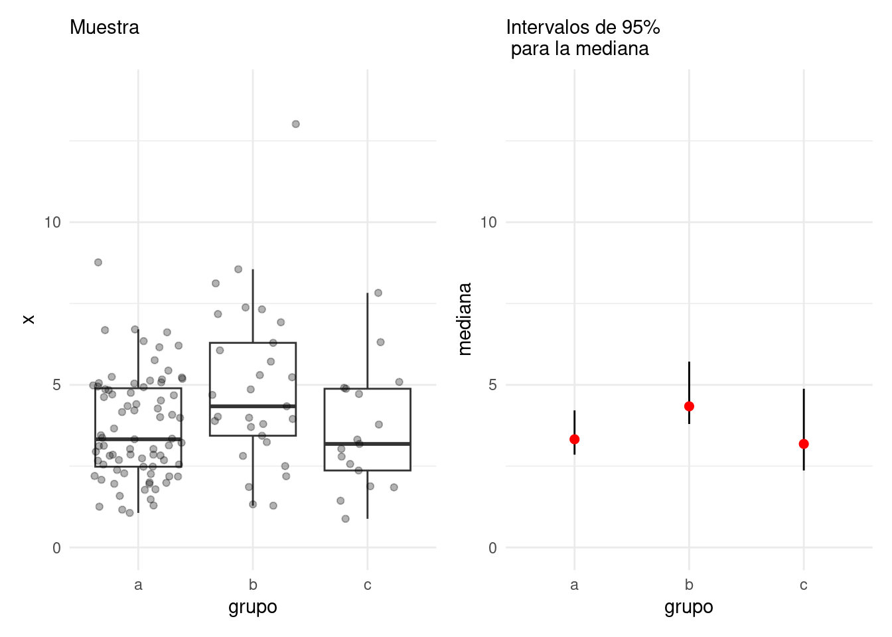
Donde:
- En rojo está nuestro = puntual de la mediana de cada grupo (la mediana muestral), y
- Las segmentos muestran un intervalo de confianza del 95% para nuestra estimación de la mediana: esto quiere decir que los valores poblacionales tienen probabilidad aproximada de 95% de estar dentro del intervalo.
Este análisis comunica correctamente que tenemos incertidumbre alta acerca de nuestras estimaciones (especialmente grupos b y c), y que no tenemos mucha evidencia de que el grupo b tenga una mediana poblacional considerablemente más alta que a o c. En muchos casos es más útil presentar la información de esta manera que usando alguna prueba de hipótesis.
La idea del bootstrap
Como explicamos, el problema que tenemos ahora es que normalmente sólo tenemos una muestra, así que no es posible calcular las distribuciones de muestreo como hicimos en la sección anterior y así evaluar qué tan preciso es nuestro estimador. Sin embargo, podemos hacer lo siguiente:
Supongamos que tenemos una muestra \(X_1,X_2,\dots, X_n\) independientes de alguna población desconocida y un estimador \(T=t(X_1,\dots, X_n)\)
Mundo poblacional
- Si tuviéramos la distribución poblacional, simulamos muestras iid para aproximar la distribución de muestreo de nuestro estimador, y así entender su variabilidad.
- Pero no tenemos la distribución poblacional.
- Sin embargo, podemos estimar la distribución poblacional con nuestros valores muestrales.
Mundo bootstrap
- Si usamos la estimación del inciso 3, entonces usando el inciso 1 podríamos tomar muestras de nuestros datos muestrales, como si fueran de la población, y usando el mismo tamaño de muestra. El muestreo lo hacemos con reemplazo de manera que produzcamos muestras independientes de la misma “población estimada”, que es la muestra.
- Evaluamos nuestra estadística en cada una de estas remuestras, a estas les llamamos replicaciones bootstrap.
- A la distribución de las replicaciones le llamamos distribución bootstrap o distribución de remuestreo del estimador.
- Usamos la distribución bootstrap para estimar la variabilidad en nuestra estimación con la muestra original.
Veamos que sucede para un ejemplo concreto, donde nos interesa estimar la media de los precios de venta de una población de casas. Tenemos nuestra muestra:
set.seed(2112)
poblacion_casas <- read_csv("data/casas.csv")
muestra <- slice_sample(poblacion_casas, n = 200, replace = TRUE)
mean(muestra$precio_miles)## [1] 179.963Esta muestra nos da nuestro estimador de la distribución poblacional:
bind_rows(muestra |> mutate(tipo = "muestra"),
poblacion_casas |> mutate(tipo = "población")) |>
ggplot(aes(sample = precio_miles, colour = tipo, group = tipo)) +
geom_qq(distribution = stats::qunif, alpha = 0.4, size = 1) +
facet_wrap(~ tipo)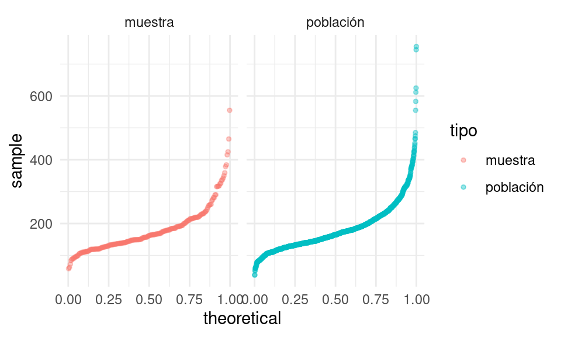
O con histogramas:
bind_rows(muestra |> mutate(tipo = "muestra"),
poblacion_casas |> mutate(tipo = "población")) |>
ggplot(aes(x = precio_miles, group = tipo)) +
geom_histogram(aes(y=..density..), binwidth = 50) +
facet_wrap(~ tipo)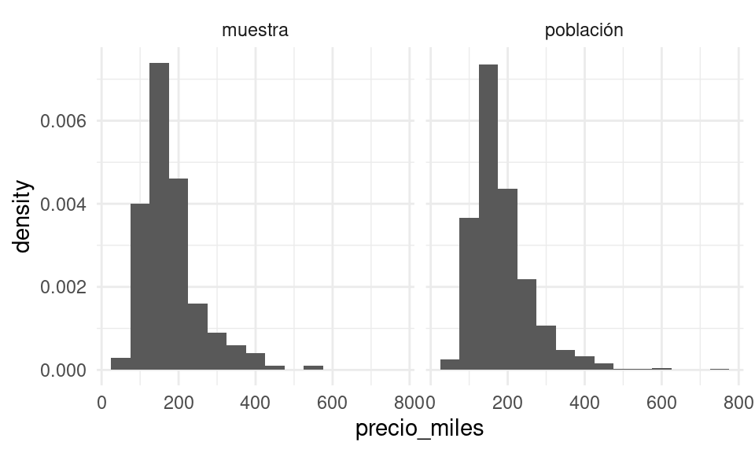
Y vemos que la aproximación es razonable en las partes centrales de la distribución.
Ahora supongamos que nos interesa cuantificar la precisión de nuestra estimación de la media poblacional de precios de casas, y usaremos la media muestral para hacer esto. Para nuestra muestra, nuestra estimación puntual es:
media <- mean(muestra$precio_miles)
media## [1] 179.963Y recordamos que para aproximar la distribución de muestreo podíamos muestrear repetidamente la población y calcular el valor del estimador en cada una de estas muestras. Aquí no tenemos la población, pero tenemos una estimación de la población: la muestra obtenida.
Así que para evaluar la variabilidad de nuestro estimador, entramos en el mundo bootstrap, y consideramos que la población es nuestra muestra.
Podemos entonces extraer un número grande de muestras con reemplazo de tamaño 200 de la muestra: el muestreo debe ser análogo al que se tomó para nuestra muestra original. Evaluamos nuestra estadística (en este caso la media) en cada una de estas remuestras:
media_muestras <- map_dbl(1:5000, ~ muestra |>
slice_sample(n = 200, replace = TRUE) |>
summarise(media_precio = mean(precio_miles), .groups = "drop") |> pull(media_precio)) Y nuestra estimación de la distribución de muestreo para la media es entonces:
bootstrap <- tibble(media = media_muestras)
g_cuantiles <- ggplot(bootstrap, aes(sample = media)) + geom_qq(distribution = stats::qunif)
g_histograma <- ggplot(bootstrap, aes(x = media)) + geom_histogram(binwidth = 2)
g_cuantiles + g_histograma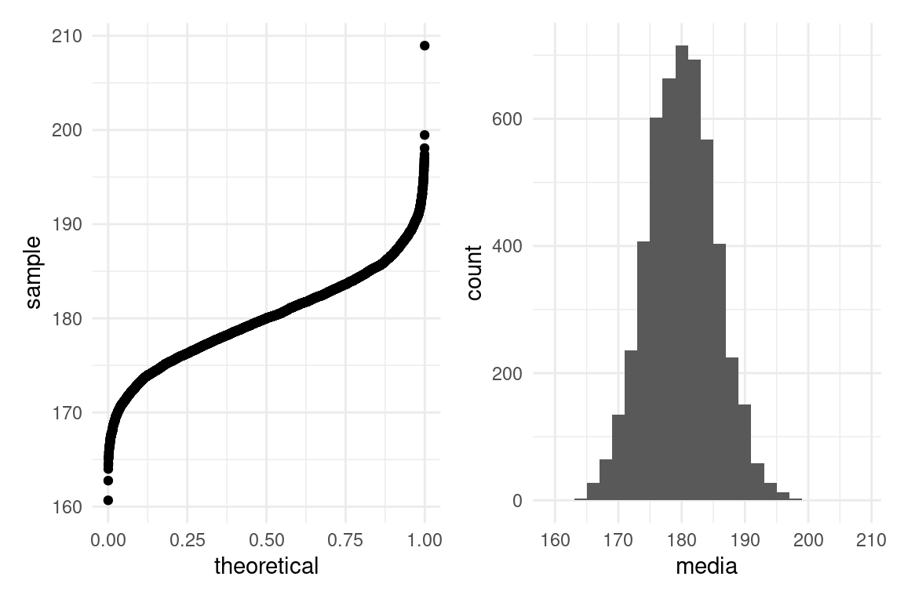 A esta le llamamos la distribución bootstrap (o de remuestreo) de la media, que definimos más abajo. Ahora podemos calcular un intervalo de confianza del 90% simplemente calculando los cuantiles de esta distribución (no son los cuantiles de la muestra original!):
limites_ic <- quantile(media_muestras, c(0.05, 0.95)) |> round()
limites_ic## 5% 95%
## 171 189Presentaríamos nuestro resultado como sigue: nuestra estimación puntual de la mediana es 180, con un intervalo de confianza del 90% de (171, 189)
Otra cosa que podríamos hacer para describir la dispersión de nuestro estimador es calcular el error estándar de remuestreo, que estima el error estándar de la distribución de muestreo:
ee_boot <- sd(media_muestras)
round(ee_boot, 2)## [1] 5.39Definición. Sea \(X_1,X_2,\ldots,X_n\) una muestra independiente y idénticamente distribuida, y \(T=t(X_1, X_2, \ldots, X_n)\) una estadística. Supongamos que sus valores que obervamos son \(x_1, x_2,\ldots, x_n\).
La distribución bootstrap, o distribución de remuestreo, de \(T\) es la distribución de \(T^*=t(X_1^*, X_2^*, \dots X_n^*)\), donde cada \(X_i^*\) se obtiene tomando al azar uno de los valores de \(x_1,x_2,\ldots, x_n\).
- Otra manera de decir esto es que la remuestra \(X_1^*, X_2^*, \ldots, X_n^*\) es una muestra con reemplazo de los valores observados \(x_1, x_2, \ldots, x_n\)
Ejemplo. Si observamos la muestra
muestra <- sample(1:20, 5)
muestra## [1] 6 10 7 3 14Una remuestra se obtiene:
sample(muestra, size = 5, replace = TRUE)## [1] 7 3 7 10 6Nótese que algunos valores de la muestra original pueden aparecer varias veces, y otros no aparecen del todo.
Y el proceso que hacemos es:
Remuestreo para una población. Dada una muestra de tamaño \(n\) de una población,
- Obtenemos una remuestra de tamaño \(n\) con reemplazo de la muestra original y calculamos la estadística de interés.
- Repetimos este remuestreo muchas veces (por ejemplo, 10,000).
- Construímos la distribución bootstrap, y examinamos sus características (dónde está centrada, dispersión y forma).
El principio de plug-in
La idea básica detrás del bootstrap es el principio de plug-in para estimar parámetros poblacionales: si queremos estimar una cantidad poblacional, calculamos esa cantidad poblacional con la muestra obtenida. Es un principio común en estadística.
Por ejemplo, si queremos estimar la media o desviación estándar poblacional, usamos la media muestral o la desviación estándar muestral. Si queremos estimar un cuantil de la población usamos el cuantil correspondiente de la muestra, y así sucesivamente.
En todos estos casos, lo que estamos haciendo es:
- Tenemos una fórmula para la cantidad poblacional de interés en términos de la
distribución poblacional.
- Tenemos una muestra, la distribución que da esta muestra se llama distribución empírica (\(\hat{F}(x) = \frac{1}{n}\{\#valores \le x\}\)).
- Contruimos nuestro estimador, de la cantidad poblacional de interés, “enchufando” la distribución empírica de la muestra en la fórmula del estimador.
En el bootstrap aplicamos este principio simple a la distribución de muestreo:
- Si tenemos la población, podemos calcular la distribución de muestreo de nuestro estimador tomando muchas muestras de la población.
- Estimamos la poblacion con la muestra y enchufamos en la frase anterior:
- Podemos estimar la distribución de muestreo de nuestro estimador tomando muchas muestras de la muestra.
Nótese que el proceso de muestreo en el último paso debe ser el mismo que se usó para tomar la muestra original. Estas dos imágenes simuladas con base en un ejemplo de Chihara and Hesterberg (2018) muestran lo que acabamos de describir:
Figure 5.1: Mundo Real
Figure 5.2: Mundo Bootstrap
Observación 1. Veremos ejemplos más complejos, pero nótese que si la muestra original son observaciones independientes obtenidas de la distribución poblacional, entonces logramos esto en las remuestras tomando observaciones con reemplazo de la muestra. Igualmente, las remuestras deben ser del mismo tamaño que la muestra original.
- ¿Porqué no funcionaría tomar muestras sin reemplazo? Piensa si hay independencia entre las observaciones de la remuestra, y cómo serían las remuestras sin reemplazo.
- ¿Por qué no se puede hacer bootstrap si no conocemos cómo se obtuvo la muestra original?
Observación 2. Estos argumentos se pueden escribir con fórmulas usando por ejemplo la función de distribución acumulada \(F\) de la población y su estimador, que es la función empírica \(\hat{F}\), como en Efron and Tibshirani (1993). Si \(\theta = t(F)\) es una cantidad poblacional que queremos estimar, su estimador plug-in es \(\hat{\theta} = t(\hat{F})\).
Observación 3: La distribución empírica \(\hat{F}\) es un estimador “razonable” de la distribución poblacional \(F,\) pues por el teorema de Glivenko-Cantelli (ver Wasserman (2013), o aquí), \(\hat{F}\) converge a \(F\) cuando el tamaño de muestra \(n\to\infty\), lo cual es intuitivamente claro.
Ejemplo
En el ejemplo de tomadores de té, podemos estimar la proporción de tomadores de té que prefiere el té negro usando nuestra muestra:
te <- read_csv("data/tea.csv") |>
rowid_to_column() |>
select(rowid, Tea, sugar)
te |> mutate(negro = ifelse(Tea == "black", 1, 0)) |>
summarise(prop_negro = mean(negro), n = length(negro), .groups = "drop")## # A tibble: 1 × 2
## prop_negro n
## <dbl> <int>
## 1 0.247 300¿Cómo evaluamos la precisión de este estimador? Supondremos que el estudio se hizo tomando una muestra aleatoria simple de tamaño 300 de la población de tomadores de té que nos interesa. Podemos entonces usar el bootstrap:
# paso 1: define el estimador
calc_estimador <- function(datos){
prop_negro <- datos |>
mutate(negro = ifelse(Tea == "black", 1, 0)) |>
summarise(prop_negro = mean(negro), n = length(negro), .groups = "drop") |>
pull(prop_negro)
prop_negro
}
# paso 2: define el proceso de remuestreo
muestra_boot <- function(datos){
#tomar muestra con reemplazo del mismo tamaño
slice_sample(datos, prop = 1, replace = TRUE)
}
# paso 3: remuestrea y calcula el estimador
prop_negro_tbl <- tibble(prop_negro = map_dbl(1:10000, ~ calc_estimador(muestra_boot(datos = te))))
# paso 4: examina la distribución bootstrap
prop_negro_tbl |>
ggplot(aes(x = prop_negro)) +
geom_histogram(bins = 15) +
geom_vline(xintercept = calc_estimador(te), color = "red")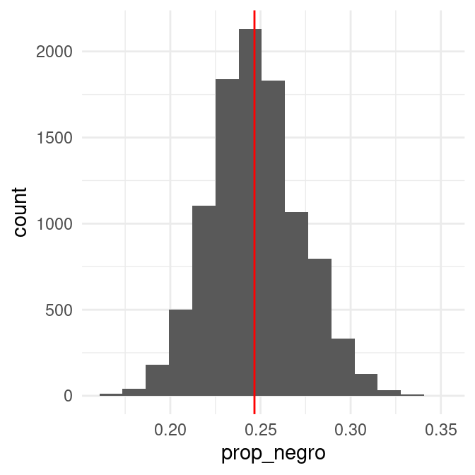
Y podemos evaluar varios aspectos, por ejemplo dónde está centrada y qué tan dispersa es la distribución bootstrap:
prop_negro_tbl |>
summarise(media = mean(prop_negro),
ee = sd(prop_negro),
cuantil_75 = quantile(prop_negro, 0.75),
cuantil_25 = quantile(prop_negro, 0.25),
.groups = "drop") |>
mutate(across(where(is.numeric), round, 3)) |>
pivot_longer(cols = everything())## # A tibble: 4 × 2
## name value
## <chr> <dbl>
## 1 media 0.247
## 2 ee 0.025
## 3 cuantil_75 0.263
## 4 cuantil_25 0.23Discusión: propiedades de la distribución bootstrap
Uasremos la distribución bootstrap principalmente para evaluar la variabilidad de nuestros estimadores (y también otros aspectos como sesgo) estimando la dispersión de la distribución de muestreo. Sin embargo, es importante notar que no la usamos, por ejemplo, para saber dónde está centrada la distribución de muestreo, o para “mejorar” la estimación remuestreando.
Ejemplo
En nuestro ejemplo, podemos ver varias muestras (por ejemplo 20) de tamaño 200, y vemos cómo se ve la aproximación a la distribución de la población:
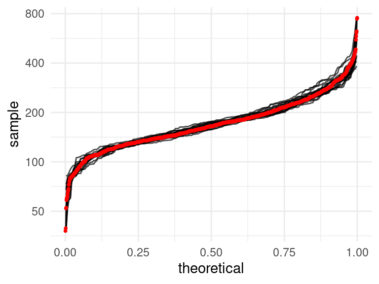
Podemos calcular las distribuciones de remuestreo (bootstrap) para cada muestra, y compararlas con la distribución de muestreo real.
# paso 1: define el estimador
calc_estimador <- function(datos){
media_precio <- datos |>
summarise(media = mean(precio_miles), .groups = "drop") |>
pull(media)
media_precio
}
# paso 2: define el proceso de remuestreo
muestra_boot <- function(datos, n = NULL){
#tomar muestra con reemplazo del mismo tamaño
if(is.null(n)){
m <- slice_sample(datos, prop = 1, replace = TRUE)}
else {
m <- slice_sample(datos, n = n, replace = TRUE)
}
m
}
dist_boot <- datos_sim |>
filter(tipo == "muestras") |>
select(precio_miles, rep) |>
group_by(rep) |> nest() |>
mutate(precio_miles = map(data, function(data){
tibble(precio_miles = map_dbl(1:1000, ~ calc_estimador(muestra_boot(data))))
})) |>
select(rep, precio_miles) |>
unnest()
dist_muestreo <- datos_sim |>
filter(tipo == "población") |>
group_by(rep) |> nest() |>
mutate(precio_miles = map(data, function(data){
tibble(precio_miles = map_dbl(1:1000, ~ calc_estimador(muestra_boot(data, n = 200))))
})) |>
select(rep, precio_miles) |>
unnest()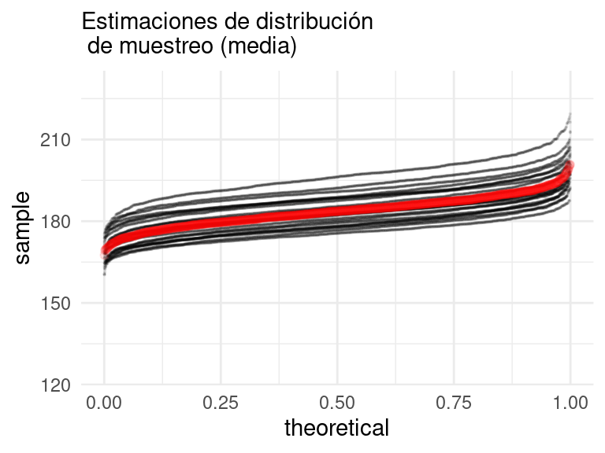
Obsérvese que:
- En algunos casos la aproximación es mejor que en otros (a veces la muestra tiene valores ligeramente más altos o más bajos).
- La dispersión de cada una de estas distribuciones bootstrap es similar a la de la verdadera distribución de muestreo (en rojo), pero puede está desplazada dependiendo de la muestra original que utilizamos.
- Adicionalmente, los valores centrales de la distribución de bootstrap tiende cubrir el verdadero valor que buscamos estimar, que es:
poblacion_casas |> summarise(media = mean(precio_miles), .groups = "drop")## # A tibble: 1 × 1
## media
## <dbl>
## 1 183.Variación en distribuciones bootstrap
En el proceso de estimación bootstrap hay dos fuentes de variación pues:
La muestra original se selecciona con aleatoriedad de una población.
Las muestras bootstrap se seleccionan con aleatoriedad de la muestra original. Esto es: La estimación bootstrap ideal es un resultado asintótico \(B=\infty\), en esta caso \(\hat{\textsf{se}}_B\) iguala la estimación plug-in \(se_{P_n}\).
En el proceso de bootstrap podemos controlar la variación del segundo aspecto, conocida como implementación de muestreo Monte Carlo, y la variación Monte Carlo decrece conforme incrementamos el número de muestras.
Podemos eliminar la variación Monte Carlo si seleccionamos todas las posibles muestras con reemplazo de tamaño \(n\), hay \({2n-1}\choose{n}\) posibles muestras y si seleccionamos todas obtenemos \(\hat{\textsf{se}}_\infty\) (bootstrap ideal), sin embargo, en la mayor parte de los problemas no es factible proceder así.
En la siguiente gráfica mostramos 6 posibles muestras de tamaño 50 simuladas de la población, para cada una de ellas se graficó la distribución empírica y se se realizan histogramas de la distribución bootstrap con \(B=30\) y \(B=1000\), en cada caso hacemos dos repeticiones, notemos que cuando el número de muestras bootstrap es grande las distribuciones bootstrap son muy similares (para una muestra de la población dada), esto es porque disminuimos el erro Monte Carlo. También vale la pena recalcar que la distribución bootstrap está centrada en el valor observado en la muestra (línea azúl punteada) y no en el valor poblacional sin embargo la forma de la distribución es similar a lo largo de las filas.
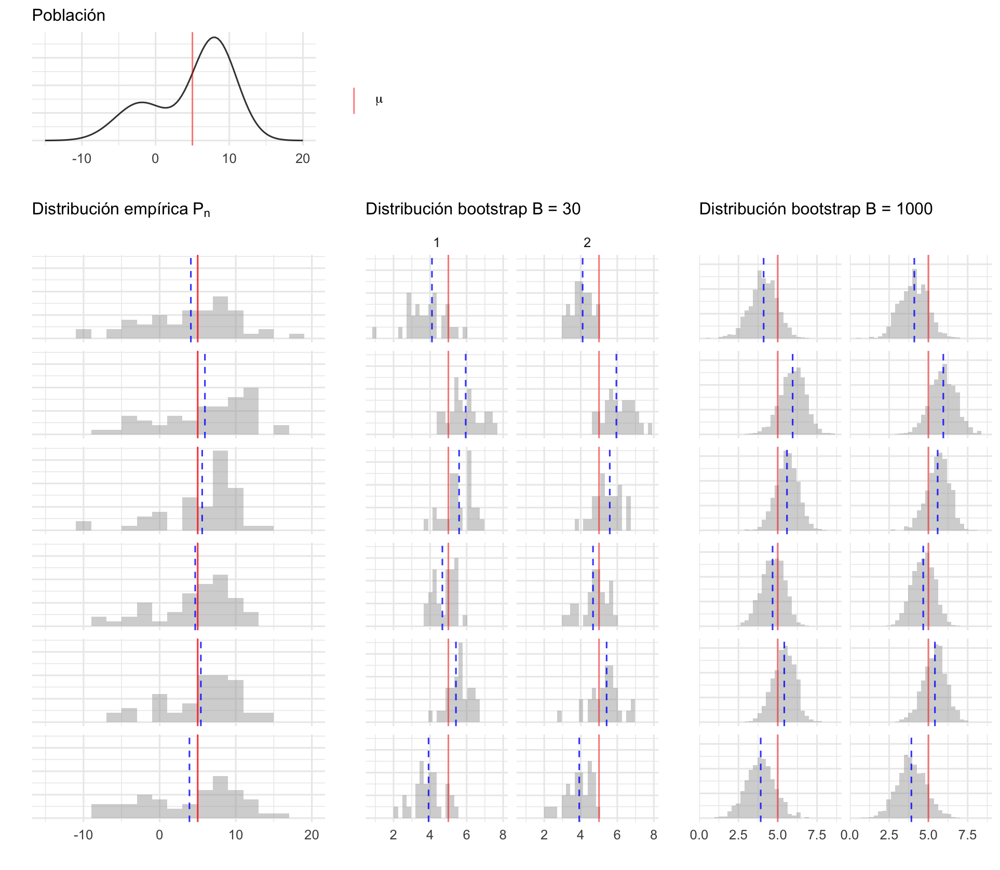
Entonces, ¿cuántas muestras bootstrap?
Incluso un número chico de replicaciones bootstrap, digamos \(B=25\) es informativo, y \(B=50\) con frecuencia es suficiente para dar una buena estimación de \(se_P(\hat{\theta})\) (Efron and Tibshirani (1993)).
Cuando se busca estimar error estándar Chihara and Hesterberg (2018) recomienda \(B=1000\) muestras, o \(B=10,000\) muestras dependiendo la presición que se busque.
Error estándar bootstrap e intervalos normales
Ahora podemos construir nuestra primera versión de intervalos de confianza basados en la distribución bootstrap.
Supongamos que queremos estimar una cantidad poblacional \(\theta\) con una estadística \(\hat{\theta} = t(X_1,\ldots, X_n)\), donde \(X_1,\ldots, X_n\) es una muestra independiente e idénticamente distribuida de la población.
Suponemos además que la distribución muestral de \(\hat{\theta}\) es aproximadamente normal (el teorema central del límite aplica), y está centrada en el verdadero valor poblacional \(\theta\).
Ahora queremos construir un intervalo que tenga probabilidad 95% de cubrir al valor poblacional \(\theta\). Tenemos que
\[P(-2\mathsf{ee}(\hat{\theta}) < \hat{\theta} - \theta < 2\mathsf{ee}(\hat{\theta})) \approx 0.95\] por las propiedades de la distribución normal (\(P(-2\sigma < X -\mu < 2\sigma)\approx 0.95\) si \(X\) es normal con media \(\mu\) y desviación estándar \(\sigma\)). Entonces
\[P(\hat{\theta} - 2\mathsf{ee}(\hat{\theta}) < \theta < \hat{\theta} + 2\mathsf{ee}(\hat{\theta})) \approx 0.95\] Es decir, la probabilidad de que el verdadero valor poblacional \(\theta\) esté en el intervalo \[[\hat{\theta} - 2\mathsf{ee}(\hat{\theta}), \hat{\theta} + 2\mathsf{ee}(\hat{\theta})]\] es cercano a 0.95. En este intervalo no conocemos el error estándar (es la desviación estándar de la distribución de muestreo de \(\hat{\theta}\)), y aquí es donde entre la distribución bootstrap, que aproxima la distribución de muestreo. Lo estimamos con
\[\hat{\mathsf{ee}}_{\textrm{boot}}(\hat{\theta})\] que es la desviación estándar de la distribución bootsrap.
Definición. El error estándar bootstrap \(\hat{\mathsf{ee}}_{\textrm{boot}}(\hat{\theta})\) se define como la desviación estándar de la distribución bootstrap de \(\theta\).
El intervalo de confianza normal bootstrap al 95% está dado por \[[\hat{\theta} - 2\mathsf{ee}(\hat{\theta}), \hat{\theta} + 2\mathsf{ee}(\hat{\theta})].\]Nótese que hay varias cosas qué revisar aquí: que el teorema central del límite aplica y que la distribución de muestreo de nuestro estimador está centrado en el valor verdadero. Esto en algunos casos se puede demostrar usando la teoría, pero más abajo veremos comprobaciones empíricas.
Ejemplo: tomadores de té negro
Consideremos la estimación que hicimos de el procentaje de tomadores de té que toma té negro:
# paso 1: define el estimador
calc_estimador <- function(datos){
prop_negro <- datos |>
mutate(negro = ifelse(Tea == "black", 1, 0)) |>
summarise(prop_negro = mean(negro), n = length(negro)) |>
pull(prop_negro)
prop_negro
}
prop_hat <- calc_estimador(te)
prop_hat |> round(2)## [1] 0.25Podemos graficar su distribución bootstrap —la cual simulamos arriba—.
g_hist <- ggplot(prop_negro_tbl, aes(x = prop_negro)) + geom_histogram(bins = 15)
g_qq_normal <- ggplot(prop_negro_tbl, aes(sample = prop_negro)) +
geom_qq() + geom_qq_line(colour = "red")
g_hist + g_qq_normal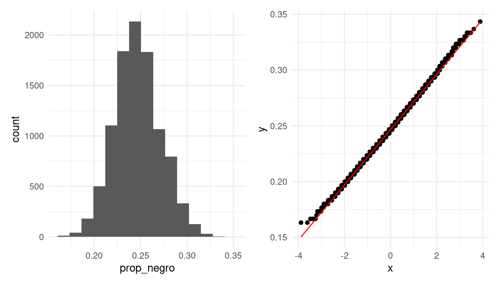
Y notamos que la distribución bootstrap es aproximadamente normal. Adicionalmente, vemos que el sesgo tiene un valor estimado de:
media_boot <- prop_negro_tbl |> pull(prop_negro) |> mean()
media_boot - prop_hat## [1] 0.0004393333De esta forma, hemos verificado que:
- La distribución bootstrap es aproximadamente normal (ver gráfica de cuantiles normales);
- La distribución bootstrap es aproximadamente insesgada.
Lo cual nos lleva a construir intervalos de confianza basados en la distribución normal. Estimamos el error estándar con la desviación estándar de la distribución bootstrap
ee_boot <- prop_negro_tbl |> pull(prop_negro) |> sd()
ee_boot## [1] 0.02485138y construimos un intervalo de confianza del 95%:
intervalo_95 <- c(prop_hat - 2 * ee_boot, prop_hat + 2 * ee_boot)
intervalo_95 |> round(2)## [1] 0.2 0.3Este intervalo tiene probabilidad del 95% de capturar al verdadero poblacional. Con alta probabilidad, entonces, el porcentaje de tomadores de té en la población está entre 0.2 y 0.3.
Ejemplo: inventario de casas vendidas
Ahora consideremos el problema de estimar el total del valor de las casas vendidas en un periodo. Tenemos una muestra de tamaño \(n=150\):
# muestra original
set.seed(121)
muestra_casas <- slice_sample(poblacion_casas, n = 150)
# paso 1: define el estimador
calc_estimador_casas <- function(datos){
N <- nrow(poblacion_casas)
n <- nrow(datos)
total_muestra <- sum(datos$precio_miles)
estimador_total <- (N / n) * total_muestra
estimador_total
}
# paso 2: define el proceso de remuestreo
muestra_boot <- function(datos){
#tomar muestra con reemplazo del mismo tamaño
slice_sample(datos, prop = 1, replace = TRUE)
}
# paso 3: remuestrea y calcula el estimador
totales_boot <- tibble(total_boot = map_dbl(1:5000, ~ calc_estimador_casas(muestra_boot(muestra_casas))))
# paso 4: examina la distribución bootstrap
g_hist <- totales_boot |>
ggplot(aes(x = total_boot)) +
geom_histogram()
g_qq <- totales_boot |>
ggplot(aes(sample = total_boot)) +
geom_qq() + geom_qq_line(colour = "red") +
geom_hline(yintercept = quantile(totales_boot$total_boot, 0.975), colour = "gray") +
geom_hline(yintercept = quantile(totales_boot$total_boot, 0.025), colour = "gray")
g_hist + g_qq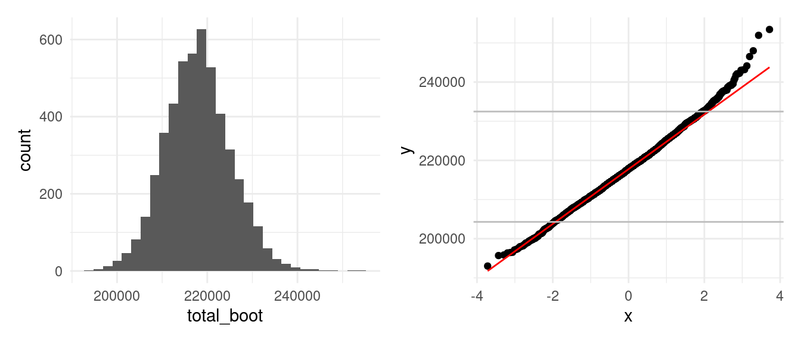
En este caso, distribución de muestreo presenta cierta asimetría, pero la desviación no es grande. En la parte central la aproximación normal es razonable. Procedemos a revisar sesgo
total_est <- calc_estimador_casas(muestra_casas)
sesgo <- mean(totales_boot$total_boot) - total_est
sesgo## [1] 110.0851Este número puede parecer grande, pero sí calculamos la desviación relativa con respecto al error estándar vemos que es chico en la escala de la distribución bootstrap:
ee_boot <- sd(totales_boot$total_boot)
sesgo_relativo <- sesgo / ee_boot
sesgo_relativo## [1] 0.01522088De forma que procedemos a construir intervalos de confianza como sigue :
c(total_est - 2*ee_boot, total_est + 2*ee_boot)## [1] 203366.6 232296.6Que está en miles de dólares. En millones de dólares, este intervalo es:
intervalo_total <- c(total_est - 2*ee_boot, total_est + 2*ee_boot) / 1000
intervalo_total |> round(1)## [1] 203.4 232.3Así que con 95% de confianza el verdadero total del valor de las casas vendidas está entre 203 y 232 millones de dólares.
Nota: en este ejemplo mostraremos una alternativa de intervalos de confianza que es más apropiado cuando observamos asimetría. Sin embargo, primero tendremos que hablar de dos conceptos clave con respecto a intervalos de confianza: calibración e interpretación.
Calibración de intervalos de confianza
¿Cómo sabemos que nuestros intervalos de confianza del 95% nominal tienen cobertura real de 95%? Es decir, tenemos que checar:
- El procedimiento para construir intervalos debe dar intervalos tales que el valor poblacional está en el intervalo de confianza para 95% de las muestras.
Como solo tenemos una muestra, la calibración depende de argumentos teóricos o estudios de simulación previos. Para nuestro ejemplo de casas tenemos la población, así que podemos checar qué cobertura real tienen los intervalos normales:
simular_intervalos <- function(rep, size = 150){
muestra_casas <- slice_sample(poblacion_casas, n = size)
N <- nrow(poblacion_casas)
n <- nrow(muestra_casas)
total_est <- (N / n) * sum(muestra_casas$precio_miles)
# paso 1: define el estimador
calc_estimador_casas <- function(datos){
total_muestra <- sum(datos$precio_miles)
estimador_total <- (N / n) * total_muestra
estimador_total
}
# paso 2: define el proceso de remuestreo
muestra_boot <- function(datos){
#tomar muestra con reemplazo del mismo tamaño
slice_sample(datos, prop = 1, replace = TRUE)
}
# paso 3: remuestrea y calcula el estimador
totales_boot <- map_dbl(1:2000, ~ calc_estimador_casas(muestra_boot(muestra_casas))) |>
tibble(total_boot = .) |>
summarise(ee_boot = sd(total_boot)) |>
mutate(inf = total_est - 2*ee_boot, sup = total_est + 2*ee_boot) |>
mutate(rep = rep)
totales_boot
}
# Para recrear, correr:
# sims_intervalos <- map(1:100, ~ simular_intervalos(rep = .x))
# write_rds(sims_intervalos, "cache/sims_intervalos.rds")
# Para usar resultados en cache:
sims_intervalos <- read_rds("cache/sims_intervalos.rds")total <- sum(poblacion_casas$precio_miles)
sims_tbl <- sims_intervalos |>
bind_rows() |>
mutate(cubre = inf < total & total < sup)
ggplot(sims_tbl, aes(x = rep)) +
geom_hline(yintercept = total, colour = "red") +
geom_linerange(aes(ymin = inf, ymax = sup, colour = cubre)) 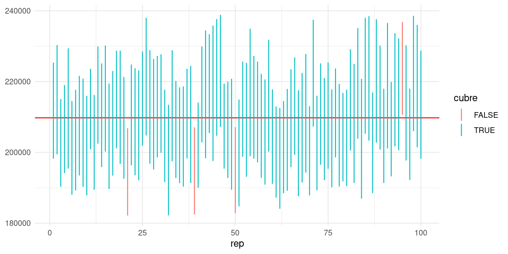 La cobertura para estos 100 intervalos simulados da
total <- sum(poblacion_casas$precio_miles)
sims_tbl |>
summarise(cobertura = mean(cubre))## # A tibble: 1 × 1
## cobertura
## <dbl>
## 1 0.96que es consistente con una cobertura real del 95% (¿qué significa “consistente”? ¿Cómo puedes checarlo con el bootstrap?)
Observación. En este caso teníamos la población real, y pudimos verificar la cobertura de nuestros intervalos. En general no la tenemos. Estos ejercicios de simulación se pueden hacer con poblaciones sintéticas que se generen con las características que creemos va a tener nuestra población (por ejemplo, sesgo, colas largas, etc.).
En general, no importa qué tipo de estimadores o intervalos de confianza usemos, requerimos checar la calibración. Esto puede hacerse con ejercicios de simulación con poblaciones sintéticas y tanto los procedimientos de muestreo como los tamaños de muestra que nos interesa usar.
Verificar la cobertura de nuestros intervalos de confianza por medio simulación está bien estudiado para algunos casos. Por ejemplo, cuando trabajamos con estimaciones para poblaciones teóricas. En general sabemos que los procedimientos funcionan bien en casos:
- con distribuciones simétricas que tengan colas no muy largas;
- estimación de proporciones donde no tratamos con casos raros o casos seguros (probabilidades cercanas a 0 o 1).
Interpretación de intervalos de confianza
Como hemos visto, “intervalo de confianza” (de 90% de confianza, por ejemplo) es un término frecuentista, que significa:
- Cada muestra produce un intervalo distinto. Para el 90% de las muestras posibles, el intervalo cubre al valor poblacional.
- La afirmación es sobre el intervalo y el mecanismo para construirlo.
- Así que con alta probabilidad, el intervalo contiene el valor poblacional.
- Intervalos más anchos nos dan más incertidumbre acerca de dónde está el verdadero valor poblacional (y al revés para intervalos más angostos).
Existen también “intervalos de credibilidad” (de 90% de probabilidad, por ejemplo), que se interpetan de forma bayesiana:
- Con 90% de probabilidad (relativamente alta), creemos que el valor poblacional está dentro del intervalo de credibilidad.
Esta última interpretación es más natural. Obsérvese que para hablar de intervalos de confianza frecuentista tenemos que decir:
- Este intervalo particular cubre o no al verdadero valor, pero nuestro procedimiento produce intervalos que contiene el verdadero valor para el 90% de las muestras.
- Esta es una interpretación relativamente débil, y muchos intervalos poco útiles pueden satisfacerla.
- La interpretación bayesiana es más natural porque expresa más claramente incertidumbre acerca del valor poblacional.
Por otro lado,
- La interpretación frecuentista nos da maneras empíricas de probar si los intervalos de confianza están bien calibrados o no: es un mínimo que “intervalos del 90%” deberían satisfacer.
Así que tomamos el punto de vista bayesiano en la intepretación, pero buscamos que nuestros intervalos cumplan o aproximen bien garantías frecuentistas (discutimos esto más adelante). Los intervalos que producimos en esta sección pueden interpretarse de las dos maneras.
Sesgo
Notemos que hemos revisado el sesgo en varias ocasiones, esto es porque algunos estimadores comunes (por ejemplo, cociente de dos cantidades aleatorias) pueden sufrir de sesgo grande, especialmente en el caso de muestras chicas. Esto a su vez afecta la cobertura, pues es posible que nuestros intervalos no tengan “cobertura simétrica”, por ejemplo. Para muchos estimadores, y muestras no muy chicas, esté sesgo tiende a ser poco importante y no es necesario hacer correcciones.
Si el tamaño del sesgo es grande comparado con la dispersión de la distribución bootstrap generalmente consideramos que bajo el diseño actual el estimador que estamos usando no es apropiado, y podemos proponer otro estimador u otro procedimiento para construir intervalos (ver Efron and Tibshirani (1993) intervalos BC_{a}),
Efron and Tibshirani (1993) sugieren más de 20% de la desviación estándar,
mientras que en Chihara and Hesterberg (2018) se sugiere 2% de la desviación estándar.
Dependiendo que tan crítico es que los intervalos estén bien calibrados podemos evaluar nuestro problema particular.
Intervalos bootstrap de percentiles
Retomemos nuestro ejemplo del valor total del precio de las casas. A través de remuestras bootstrap hemos verificado gráficamente que la distribución de remuestreo es ligeramente asimétrica (ver la figura de abajo).

Anteriormente hemos calculado intervalos de confianza basados en supuestos normales por medio del error éstandar. Este intervalo está dado por
## [1] 203.4 232.3y por construcción sabemos que es simétrico con respecto al valor estimado, pero como podemos ver la distribución de muestreo no es simétrica, lo cual podemos confirmar por ejemplo calculando el porcentaje de muestras bootstrap que caen por arriba y por debajo del intervalo construido:
## # A tibble: 1 × 2
## prop_inf prop_sup
## <dbl> <dbl>
## 1 0.0192 0.026los cuales se han calculado como el porcentaje de medias bootstrap por debajo (arriba) de la cota inferior (superior), y vemos que no coinciden con el nivel de confianza prestablecido (2.5% para cada extremo).
Otra opción común que se usa específicamente cuando la distribución bootstrap no es muy cercana a la normal son los intervalos de percentiles bootstrap:
Definición. El intervalo de percentiles bootstrap al 95% de confianza está dado por \[[q_{0.025}, q_{0.975}]\] donde \(q_f\) es el percentil \(f\) de la distribución bootstrap.
Otros intervalos comunes son el de 80% o 90% de confianza, por ejemplo, que corresponden a \([q_{0.10}, q_{0.90}]\) y \([q_{0.05}, q_{0.95}]\). Ojo: intervalos de confianza muy alta (por ejemplo 99.5%) pueden tener mala calibración o ser muy variables en su longitud pues dependen del comportamiento en las colas de la distribución.
Para el ejemplo de las casas, calcularíamos simplemente
intervalo_95 <- totales_boot |> pull(total_boot) |> quantile(probs = c(0.025, 0.975)) / 1000
(intervalo_95) |> round(1)## 2.5% 97.5%
## 204.3 232.5que está en millones de dólares. Nótese que es similar al intervalo de error estándar.
Otro punto interesante sobre los intervalos bootstrap de percentiles es que lidian naturalmente con la asímetría de la distribución bootstrap. Ilustramos esto con la distancia de las extremos del intervalo con respecto a la media:
abs(intervalo_95 - total_est/1000)## 2.5% 97.5%
## 13.53912 14.64674Los intervalos de confianza nos permiten presentar un rango de valores posibles para el parámetro de interés. Esto es una notable diferencia con respecto a presentar sólo un candidato como estimador. Nuestra fuente de información son los datos. Es por esto que si vemos valores muy chicos (grandes) en nuestra muestra, el intervalo se tiene que extender a la izquierda (derecha) para compensar dichas observaciones.
Ejemplo
Consideramos los datos de propinas. Queremos estimar la media de cuentas totales para la comida y la cena. Podemos hacer bootstrap de cada grupo por separado:
# en este ejemplo usamos rsample, pero puedes
# escribir tu propio código
library(rsample)
propinas <- read_csv("data/propinas.csv")
estimador <- function(split, ...){
muestra <- analysis(split) |> group_by(momento)
muestra |>
summarise(estimate = mean(cuenta_total), .groups = 'drop') |>
mutate(term = momento)
}
intervalo_propinas_90 <- bootstraps(propinas, strata = momento, 1000) |>
mutate(res_boot = map(splits, estimador)) |>
int_pctl(res_boot, alpha = 0.10) |>
mutate(across(where(is.numeric), round, 2))
intervalo_propinas_90## # A tibble: 2 × 6
## term .lower .estimate .upper .alpha .method
## <chr> <dbl> <dbl> <dbl> <dbl> <chr>
## 1 Cena 19.8 20.8 22.0 0.1 percentile
## 2 Comida 15.6 17.1 18.8 0.1 percentileNota: .estimate es la media de los valores de la estadística sobre las remuestras, no es el estimador original.
De la tabla anterior inferimos que la media en la cuenta en la cena es más grande que la de la comida. Podemos graficar agregando los estimadores plugin:
estimadores <- propinas |>
group_by(momento) |>
rename(term = momento) |>
summarise(media = mean(cuenta_total))
ggplot(intervalo_propinas_90, aes(x = term)) +
geom_linerange(aes(ymin = .lower, ymax = .upper)) +
geom_point(data = estimadores, aes(y = media), colour = "red", size = 3) +
xlab("Momento") + ylab("Media de cuenta total (dólares)") +
labs(subtitle = "Intervalos de 90% para la media")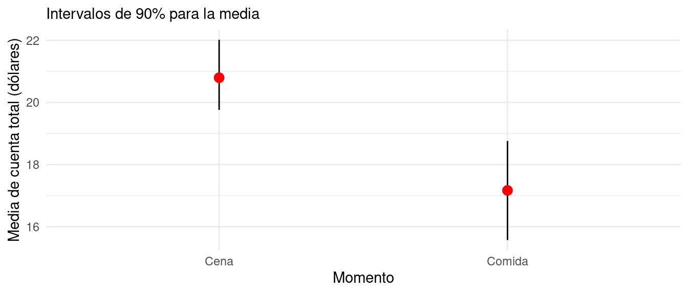
Nótese que el bootstrap lo hicimos por separado en cada momento del día (por eso el argumento strata en la llamada a bootstraps):
Bootstrap para dos muestras
En el ejemplo anterior consideramos cómo hacer bootstrap cuando tenemos muestras independientes. También podemos aplicarlo a estimadores que comparen directamente las dos muestras:
Bootstrap para comparar poblaciones. Dadas muestras independientes de tamaños \(m\) y \(n\) de dos poblaciones:
- Extraer una remuestra de tamaño \(m\) con reemplazo de la primera muestra y una remuestra separada de tamaño \(n\) de la segunda muestra. Calcula la estadística que compara los dos grupos (por ejemplo, diferencia de medias)
- Repetir este proceso muchas veces (por ejemplo, 1000 - 10000).
- Construir la distribución bootstrap de la estadística. Examinar dispersión, sesgo y forma.
Ejemplo
Supongamos que queremos comparar directamente la media de la cuenta total en comida y cena. Podemos hacer:
estimador_dif <- function(split, ...){
muestra <- analysis(split) |> group_by(momento)
muestra |>
summarise(estimate = mean(cuenta_total), .groups = "drop") |>
pivot_wider(names_from = momento, values_from = estimate) |>
mutate(estimate = Cena - Comida, term = "diferencia")
}
dist_boot <- bootstraps(propinas, strata = momento, 2000) |>
mutate(res_boot = map(splits, estimador_dif))
g_1 <- ggplot(dist_boot |> unnest(res_boot), aes(x = estimate)) + geom_histogram(bins = 20) +
xlab("Diferencia Comida vs Cena")
g_2 <- ggplot(dist_boot |> unnest(res_boot), aes(sample = estimate)) + geom_qq() + geom_qq_line(colour = 'red')
g_1 + g_2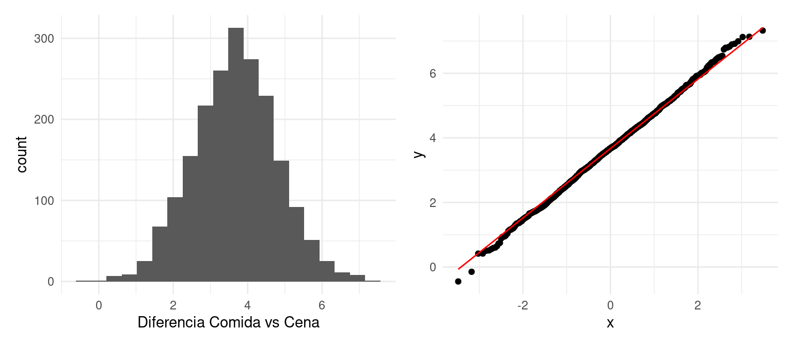
Y podemos calcular un intervalo de confianza para la diferencia de medias:
dist_boot |> int_pctl(res_boot, alpha = 0.01) |>
mutate(across(where(is.numeric), round, 2)) |>
select(term, .lower, .upper)## # A tibble: 1 × 3
## term .lower .upper
## <chr> <dbl> <dbl>
## 1 diferencia 0.73 6.54Que nos indica que con alta probabilidad las cuentas son más altas que en la cena que en la comida. La diferencia puede ir de un poco menos de un dólar hasta seis dólares con 99% de confianza.
Datos pareados
En otros casos, las muestras no son independientes y están pareadas. Por ejemplo, este es un estudio dende a 10 personas una noche se les dio una medicina para dormir y otra noche otra medicina. Se registraron cuántas horas de sueño extra comparados con un día donde no tomaron medicina.
dormir <- sleep |>
pivot_wider(names_from = group,
names_prefix = "medicina_",
values_from = extra)
dormir## # A tibble: 10 × 3
## ID medicina_1 medicina_2
## <fct> <dbl> <dbl>
## 1 1 0.7 1.9
## 2 2 -1.6 0.8
## 3 3 -0.2 1.1
## 4 4 -1.2 0.1
## 5 5 -0.1 -0.1
## 6 6 3.4 4.4
## 7 7 3.7 5.5
## 8 8 0.8 1.6
## 9 9 0 4.6
## 10 10 2 3.4En este caso, el bootstrap se hace sobre individuos, y quisiéramos comparar la medición de la medicina_1 con la medicina_2. Usaremos la media de al diferencia entre horas de sueño entre las dos medicinas. Nuestro estimador puntual es:
estimador_dif <- dormir |>
mutate(dif_2_menos_1 = medicina_2 - medicina_1) |>
summarise(dif_media = mean(dif_2_menos_1))
estimador_dif## # A tibble: 1 × 1
## dif_media
## <dbl>
## 1 1.58Esto indica que en promedio duermen hora y media más con la medicina 2 que con la medicina 1. Como hay variabilildad considerable en el número de horas extra de cada medicina dependiendo del individuo, es necesario hacer una intervalo de confianza para descartar que esta diferencia haya aparecido por azar debido a la variación muestral.
Nótese que aquí no tenemos estratos, pues solo hay una muestra de individuo con dos mediciones.
estimador_dif <- function(split, ...){
muestra <- analysis(split)
muestra |>
mutate(dif_2_menos_1 = medicina_2 - medicina_1) |>
summarise(estimate = mean(dif_2_menos_1), .groups = "drop") |>
mutate(term = "diferencia 2 vs 1")
}
dist_boot <- bootstraps(dormir, 2000) |>
mutate(res_boot = map(splits, estimador_dif))
g_1 <- ggplot(dist_boot |> unnest(res_boot), aes(x = estimate)) + geom_histogram(bins = 20)
g_2 <- ggplot(dist_boot |> unnest(res_boot), aes(sample = estimate)) + geom_qq() + geom_qq_line(colour = 'red')
g_1 + g_2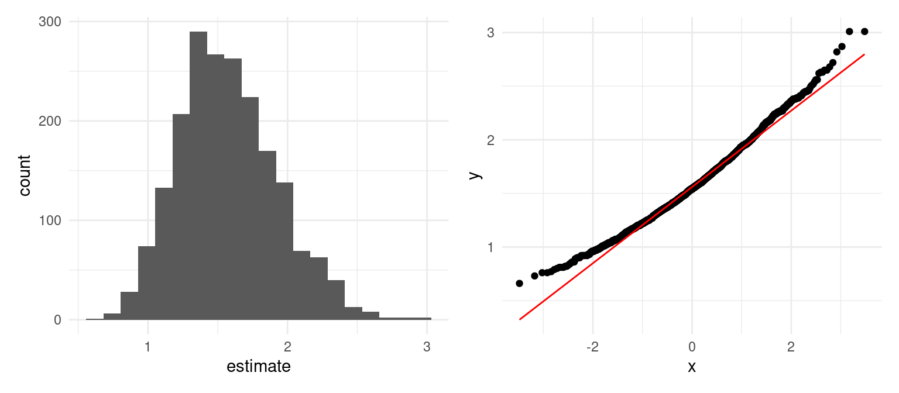
Nuestro intervalo de percentiles al 90% es de
dist_boot |> int_pctl(res_boot, 0.10)## # A tibble: 1 × 6
## term .lower .estimate .upper .alpha .method
## <chr> <dbl> <dbl> <dbl> <dbl> <chr>
## 1 diferencia 2 vs 1 1.04 1.57 2.22 0.1 percentileLo que indica con alta probabilidad que la medicina 2 da entre 1 y 2 horas extras de sueño. Nota que en este ejemplo también podríamos hacer una prueba de hipótesis por permutaciones, suponiendo como hipótesis nula que las dos medicinas son equivalentes. Sin embargo, usualmente es más informativo presentar este tipo de intervalos para estimar la diferencia.
Bootstrap y otras estadísticas
El bootstrap es una técnica versátil. Un ejemplo son estimadores de razón, que tienen la forma
\[ \hat{r} = \frac{\overline y}{\overline x}\] Por ejemplo, ¿cómo haríamos estimación para el procentaje de área area habitable de las casas en relación al tamaño del lote? Una manera de estimar esta cantidad es dividiendo la suma del área habitable de nuestra muestra y dividirlo entre la suma del área de los lotes de nuestra muestra, como en la fórmula anterior. Esta fórmula es más difícil pues tanto numerador como denominador tienen variabilidad, y estas dos cantidades no varían independientemente.
Con el bootstrap podemos atacar estos problemas
Ejemplo: estimadores de razón
Nuestra muestra original es:
set.seed(250)
casas_muestra <- slice_sample(poblacion_casas, n = 200)El estimador de interés es:
estimador_razon <- function(split, ...){
muestra <- analysis(split)
muestra |>
summarise(estimate = sum(area_habitable_sup_m2) / sum(area_lote_m2), .groups = "drop") |>
mutate(term = "% area del lote construida")
}Y nuestra estimación puntual es
estimacion <- muestra_casas |> summarise(estimate = sum(area_habitable_sup_m2) / sum(area_lote_m2))
estimacion## # A tibble: 1 × 1
## estimate
## <dbl>
## 1 0.148Es decir que en promedio, un poco más de 15% del lote total es ocupado por área habitable. Ahora hacemos bootstrap para construir un intervalo:
dist_boot <- bootstraps(casas_muestra, 2000) |>
mutate(res_boot = map(splits, estimador_razon))
g_1 <- ggplot(dist_boot |> unnest(res_boot), aes(x = estimate)) + geom_histogram(bins = 20)
g_2 <- ggplot(dist_boot |> unnest(res_boot), aes(sample = estimate)) + geom_qq() + geom_qq_line(colour = 'red')
g_1 + g_2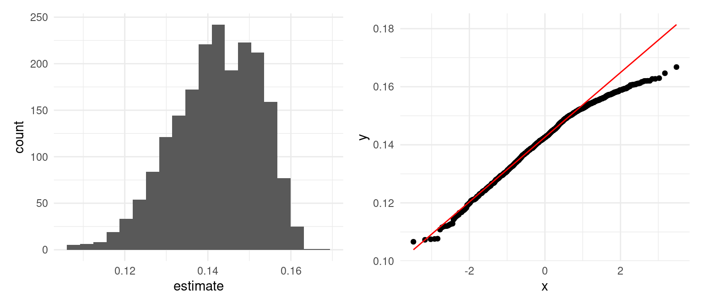
En este caso la cola derecha parece tener menos dispersión que una distribución normal. Usamos un intervalo de percentiles para obtener:
dist_boot |> int_pctl(res_boot) |>
mutate(estimador = estimacion$estimate) |>
rename(media_boot = .estimate) |>
mutate(bias = media_boot - estimador) |>
pivot_longer(is_double) |>
mutate(value = round(value, 3))## # A tibble: 6 × 4
## term .method name value
## <chr> <chr> <chr> <dbl>
## 1 % area del lote construida percentile .lower 0.121
## 2 % area del lote construida percentile media_boot 0.142
## 3 % area del lote construida percentile .upper 0.159
## 4 % area del lote construida percentile .alpha 0.05
## 5 % area del lote construida percentile estimador 0.148
## 6 % area del lote construida percentile bias -0.006De modo que en esta zona, entre 12% y 16% de toda el área disponible es ocupada por área habitable: estas son casas que tienen jardines o terrenos, garage relativamente grandes.
Ejemplo: suavizadores
Podemos usar el bootstrap para juzgar la variabilidad de un suavizador, que consideramos como nuestra estadística:
graf_casas <- function(data){
ggplot(data |> filter(calidad_gral < 7),
aes(x = area_habitable_sup_m2)) +
geom_point(aes(y = precio_m2_miles), alpha = 0.75) +
geom_smooth(aes(y = precio_m2_miles), method = "loess", span = 0.7,
se = FALSE, method.args = list(degree = 1, family = "symmetric"))
}
graf_casas(muestra_casas)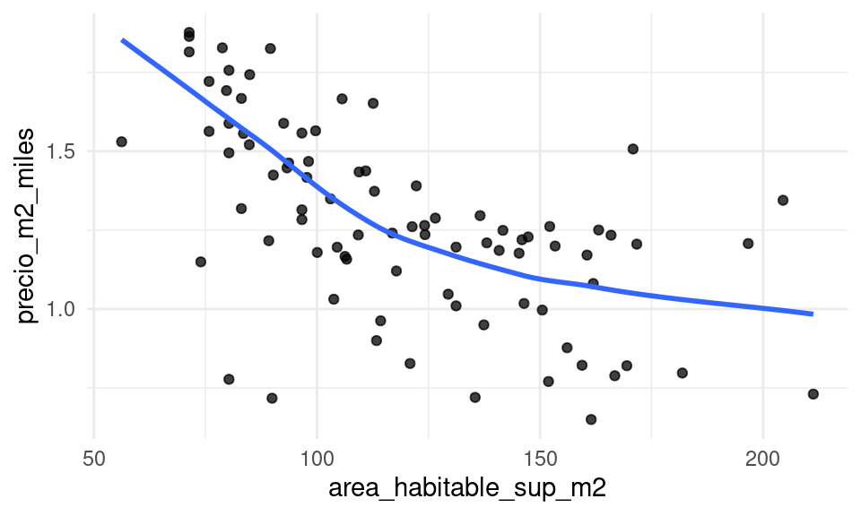
Podemos hacer bootstrap para juzgar la estabilidad del suavizador:
suaviza_boot <- function(x, data){
# remuestreo
muestra_boot <- slice_sample(data, prop = 1, replace = T)
ajuste <- loess(precio_m2_miles ~ area_habitable_sup_m2, data = muestra_boot,
degree = 1, span = 0.7, family = "symmetric")
datos_grafica <- tibble(area_habitable_sup_m2 = seq(25, 250, 5))
ajustados <- predict(ajuste, newdata = datos_grafica)
datos_grafica |> mutate(ajustados = ajustados) |>
mutate(rep = x)
}
reps <- map(1:10, ~ suaviza_boot(.x, casas_muestra |> filter(calidad_gral < 7))) |>
bind_rows()# ojo: la rutina loess no tienen soporte para extrapolación
graf_casas(casas_muestra) +
geom_line(data = reps, aes(y = ajustados, group = rep), alpha = 1, colour = "red") 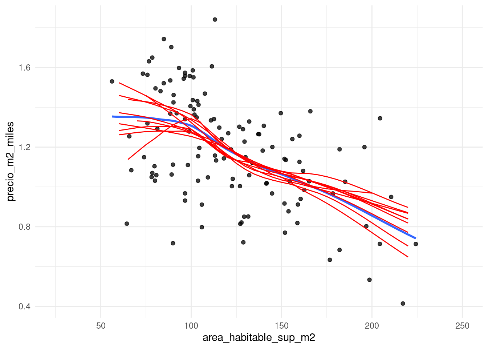
Donde vemos que algunas cambios de pendiente del suavizador original no son muy interpretables (por ejemplo, para áreas chicas) y alta variabilidad en general en los extremos. Podemos hacer más iteraciones para calcular bandas de confianza:
reps <- map(1:200, ~ suaviza_boot(.x, casas_muestra |> filter(calidad_gral < 7))) |>
bind_rows()
# ojo: la rutina loess no tienen soporte para extrapolación
graf_casas(casas_muestra) +
geom_line(data = reps, aes(y = ajustados, group = rep), alpha = 0.2, colour = "red") 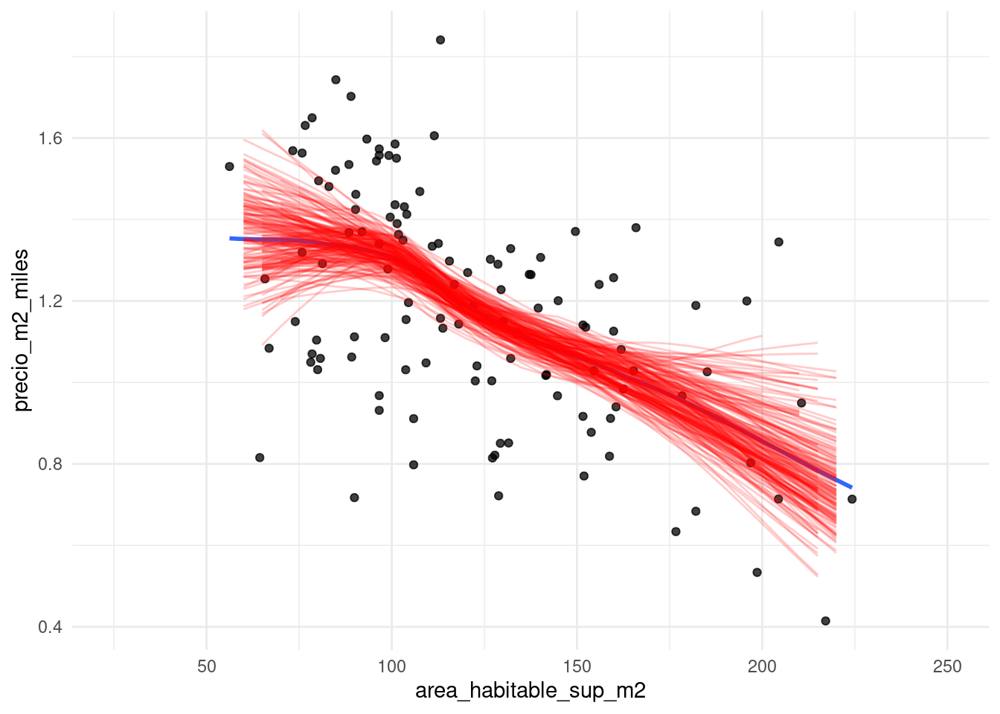 Donde observamos cómo tenemos incertidumbre en cuanto al nivel y forma de las curvas en los extremos de los datos (casas grandes y chicas), lo cual es natural. Aunque podemos resumir para hacer bandas de confianza, mostrar remuestras de esta manera es informativo: por ejempo: vemos cómo es probable también que para casas de menos de 70 metros cuadrados el precio por metro cuadrado no cambia tanto (líneas constantes)
Bootstrap y estimadores complejos: tablas de perfiles
Podemos regresar al ejemplo de la primera sesión donde calculamos perfiles de los tomadores de distintos tés: en bolsa, suelto, o combinados. Caundo hacemos estos tipos de análisis no es raro que los prefiles tengan variabilidad considerable que es necesario cuantificar.
| price | tea bag | tea bag+unpackaged | unpackaged | promedio |
|---|---|---|---|---|
| p_upscale | -0.71 | -0.28 | 0.98 | 28 |
| p_variable | -0.12 | 0.44 | -0.31 | 36 |
| p_cheap | 0.3 | -0.53 | 0.23 | 2 |
| p_branded | 0.62 | -0.16 | -0.45 | 25 |
| p_private label | 0.72 | -0.22 | -0.49 | 5 |
| p_unknown | 1.58 | -0.58 | -1 | 3 |
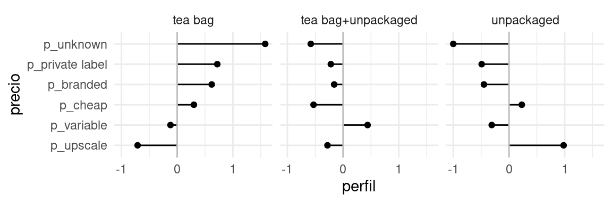
Hacemos bootstrap sobre toda la muestra, y repetimos exactamente el mismo proceso de construción de perfiles:
boot_perfiles <- map(1:1000, function(x){
te_boot <- te |> slice_sample(prop = 1, replace = TRUE)
calcular_perfiles(te_boot) |> mutate(rep = x)
}) |> bind_rows()Ahora resumimos y graficamos, esta vez de manera distinta:
resumen_perfiles <- boot_perfiles |> group_by(how, price) |>
summarise(perfil_media = mean(perfil), ymax = quantile(perfil, 0.9), ymin = quantile(perfil, 0.10))
resumen_bolsa <- resumen_perfiles |> ungroup() |>
filter(how == "tea bag") |> select(price, perfil_bolsa = perfil_media)
resumen_perfiles <- resumen_perfiles |> left_join(resumen_bolsa) |>
ungroup() |>
mutate(price = fct_reorder(price, perfil_bolsa))
ggplot(resumen_perfiles, aes(x = price, y = perfil_media, ymax = ymax, ymin = ymin)) +
geom_point(colour = "red") + geom_linerange() +
facet_wrap(~how) + coord_flip() +
geom_hline(yintercept = 0, colour = "gray") + ylab("Perfil") + xlab("Precio")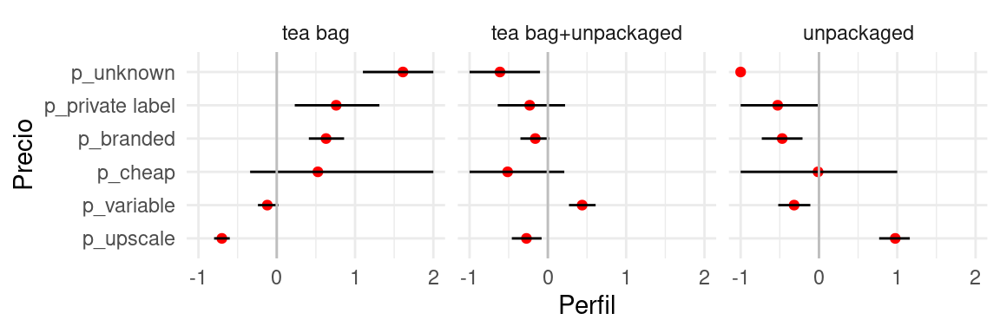
Nótese una deficiencia clara del bootstrap: para los que compran té suelto, en la muestra no existen personas que desconocen de dónde provienen su té (No sabe/No contestó). Esto produce un intervalo colapsado en 0 que no es razonable.
Podemos remediar esto de varias maneras: quitando del análisis los que no sabe o no contestaron, agrupando en otra categoría, usando un modelo, o regularizar usando proporciones calculadas con conteos modificados: por ejemplo, agregando un caso de cada combinación (agregaría 18 personas “falsas” a una muestra de 290 personas).
Bootstrap y muestras complejas
La necesidad de estimaciones confiables junto con el uso eficiente de recursos conllevan a diseños de muestras complejas. Estos diseños típicamente usan las siguientes técnicas: muestreo sin reemplazo de una población finita, muestreo sistemático, estratificación, conglomerados, ajustes a no-respuesta, postestratificación. Como consecuencia, los valores de la muestra suelen no ser independientes y los análisis de los mismos dependerá del diseño de la muestra. Comenzaremos con definiciones para entender el problema.
set.seed(3872999)
n_escuelas <- 5000
tipo <- sample(c("rural", "urbano", "indigena"), n_escuelas, replace = TRUE,
prob = c(0.3, 0.5, 0.2))
escuela <- tibble(ind_escuela = 1:n_escuelas, tipo,
media_tipo = case_when(tipo == "urbano" ~ 550, tipo == "rural" ~ 400, TRUE ~ 350),
media_escuela = rnorm(n_escuelas, media_tipo, 30),
n_estudiantes = round(rnorm(n_escuelas, 30, 4)))
estudiantes <- uncount(escuela, n_estudiantes, .id = "id_estudiante") %>%
rowwise() %>%
mutate(calif = rnorm(1, media_escuela, 70)) %>%
ungroup()Imaginemos que tenemos una población de 5000 escuelas, y queremos estimar la media de las calificaciones de los estudiantes en una prueba.
head(estudiantes)## # A tibble: 6 × 6
## ind_escuela tipo media_tipo media_escuela id_estudiante calif
## <int> <chr> <dbl> <dbl> <int> <dbl>
## 1 1 urbano 550 561. 1 488.
## 2 1 urbano 550 561. 2 574.
## 3 1 urbano 550 561. 3 456.
## 4 1 urbano 550 561. 4 507.
## 5 1 urbano 550 561. 5 598.
## 6 1 urbano 550 561. 6 527.La primera idea sería tomar una muestra aleatoria (MAS, muestreo aleatorio simple), donde todos los estudiantes tienen igual probabilidad de ser seleccionados. Con estas condiciones el presupuesto alcanza para seleccionar a 60 estudiantes, hacemos esto y calculamos la media.
muestra <- slice_sample(estudiantes, n = 60)
round(mean(muestra$calif), 2)## [1] 466.73Este número es muy cercano a la media verdadera de la población: 466.51, pero esta es una de muchas posibles muestras.
medias_mas <- rerun(1000, mean(sample(estudiantes$calif, 60))) %>% flatten_dbl()
sd(medias_mas)## [1] 14.75242hist_mas <- ggplot(tibble(medias_mas), aes(x = medias_mas)) +
geom_histogram(binwidth = 10) +
geom_vline(xintercept = mean(estudiantes$calif), color = "red") +
xlim(410, 520)
qq_mas <- ggplot(tibble(medias_mas), aes(sample = medias_mas)) +
geom_qq(distribution = stats::qunif) +
ylim(410, 520)
hist_mas + qq_mas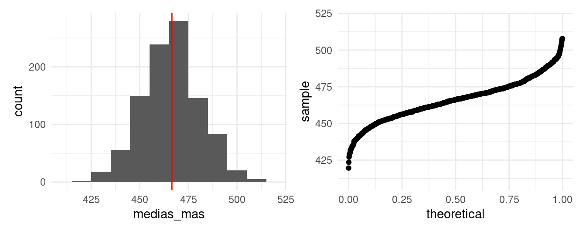
Algunas de las muestras generan valores alejados de la verdadera media, para minimizar la probabilidad de seleccionar muestras que lleven a estimaciones alejadas del verdadero valor poblacional podríamos tomar muestras más grandes.
Pero usualmente los costos limitan el tamaño de muestra. Una alternativa es estratificar, supongamos que sabemos el tipo de cada escuela (urbana, rural o indígena) y sabemos también que la calificación de los estudiantes de escuelas urbanas tiende a ser distinta a las calificaciones que los estudiantes de escuelas rurales o indígenas.
En esta caso un diseño más eficiente consiste en tomar muestras independientes dentro de cada estrato.
muestra_estrat <- estudiantes %>%
group_by(tipo) %>%
sample_frac(0.0004)
dim(muestra_estrat)## [1] 60 6muestrea_estrat <- function(){
muestra <- estudiantes %>%
group_by(tipo) %>%
sample_frac(0.0004)
mean(muestra$calif)
}
medias_estrat <- rerun(1000, muestrea_estrat()) %>% flatten_dbl()Notamos que la distribución muestral está más concentrada que el caso de MAS, el error estándar se reduce de 14.75 a
10.2
hist_estrat <- ggplot(tibble(medias_estrat), aes(x = medias_estrat)) +
geom_histogram(binwidth = 6) +
geom_vline(xintercept = mean(estudiantes$calif), color = "red") +
xlim(410, 520)
qq_estrat <- ggplot(tibble(medias_estrat), aes(sample = medias_estrat)) +
geom_qq(distribution = stats::qunif) +
ylim(410, 520)
hist_estrat + qq_estrat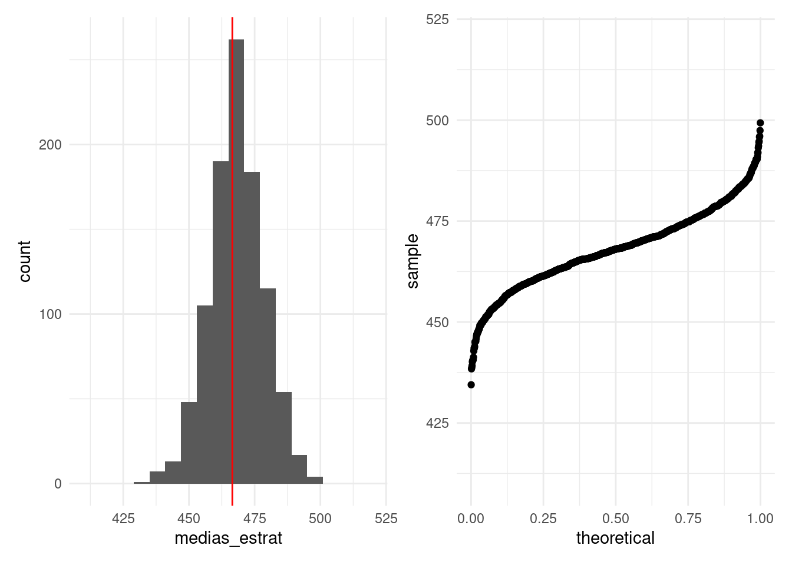
Entonces, la estratificación nos sirve para reducir el error estándar de las estimaciones. Otro procedimiento común en muestreo es introducir conglomerados, a diferencia del muestreo estratificado, el propósito principal de los conglomerados es reducir costos. Veamos cuantas escuelas tendría que visitar en una muestra dada (con diseño estratificado).
n_distinct(muestra_estrat$ind_escuela)## [1] 60Es fácil ver que visitar una escuela para aplicar solo uno o dos exámenes no es muy eficiente en cuestión de costos. Es por ello que se suelen tomar muestras considerando conglomerados naturales, en este caso la escuela. En nuestro ejemplo es razonable suponer que una parte grande del costo del muestreo sea mandar al examinador a la escuela, y que una vez en la escuela el costo de evaluar a todo sexto, en lugar de a un único alumno, es relativamente bajo. Podemos imaginar que considerando estos costos por visita de escuela nos alcance para visitar 40 escuelas y en cada una examinar a todos los estudiantes.
muestra_escuelas <- escuela %>%
group_by(tipo) %>%
sample_frac(size = 0.008)
muestra_cgl <- muestra_escuelas %>%
left_join(estudiantes)
mean(muestra_cgl$calif)## [1] 462.5677muestrea_cgl <- function(){
muestra_escuelas <- escuela %>%
group_by(tipo) %>%
sample_frac(size = 0.008)
muestra_cgl <- muestra_escuelas %>%
left_join(estudiantes, by = c("ind_escuela", "tipo"))
mean(muestra_cgl$calif)
}
medias_cgl <- rerun(1000, muestrea_cgl()) %>% flatten_dbl()En este caso, el número de estudiantes examinados es mucho mayor que en MAS y muestreo estratificado, notemos que el número de estudiantes evaluados cambiará de muestra a muestra dependiendo del número de alumnos en las escuelas seleccionadas.
sd(medias_cgl)## [1] 5.337327hist_cgl <- ggplot(tibble(medias_cgl), aes(x = medias_cgl)) +
geom_histogram(binwidth = 6) +
geom_vline(xintercept = mean(estudiantes$calif), color = "red") +
xlim(410, 520)
qq_cgl <- ggplot(tibble(medias_cgl), aes(sample = medias_cgl)) +
geom_qq(distribution = stats::qunif) +
ylim(410, 520)
hist_cgl + qq_cgl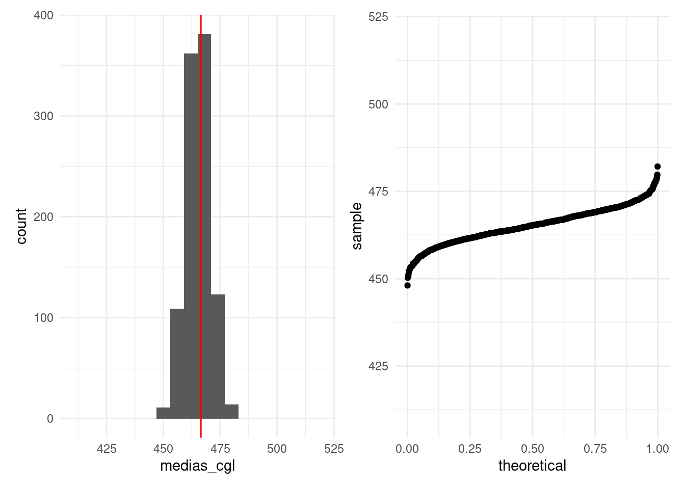
Ejemplo: ENIGH
La complejidad de los diseños de encuestas conlleva a que el cálculo de errores estándar sea muy complicado, para atacar este problema hay dos técnicas básicas: 1) un enfoque analítico usando linearización, 2) métodos de remuestreo como bootstrap. El incremento en el poder de cómputo ha favorecido los métodos de remuestreo pues la linearización requiere del desarrollo de una fórmula para cada estimación y supuestos adicionales para simplificar.
En 1988 Rao and Wu (1988) propusieron un método de bootstrap para diseños estratificados multietápicos con reemplazo de UPMs (Unidades Primarias de Muestreo) que describimos a continuación.
ENIGH. Usaremos como ejemplo la Encuesta Nacional de Ingresos y Gastos de los Hogares, ENIGH 2018 (INEGI 2018), esta encuesta usa un diseño de conglomerados estratificado.
Antes de proceder a bootstrap debemos entender como se seleccionaron los datos, esto es, el diseño de la muestra:
Unidad primaria de muestreo (UPM). Las UPMs están constituidas por agrupaciones de viviendas. Se les denomina unidades primarias pues corresponden a la primera etapa de selección, las unidades secundarias (USMs) serían los hogares.
Estratificación. Los estratos se construyen en base a estado, ámbito (urbano, complemento urbano, rural), características sociodemográficas de los habitantes de las viviendas, características físicas y equipamiento. El proceso de estratificación resulta en 888 subestratos en todo el ámbito nacional.
La selección de la muestra es independiente para cada estrato, y una vez que se obtiene la muestra se calculan los factores de expansión que reflejan las distintas probabilidades de selección. Después se llevan a cabo ajustes por no respuesta y por proyección (calibración), esta última busca que distintos dominios de la muestra coincidan con la proyección de población de INEGI.
concentrado_hogar <- read_csv(here::here("data",
"conjunto_de_datos_enigh_2018_ns_csv",
"conjunto_de_datos_concentradohogar_enigh_2018_ns", "conjunto_de_datos",
"conjunto_de_datos_concentradohogar_enigh_2018_ns.csv"))
# seleccionar variable de ingreso corriente
hogar <- concentrado_hogar %>%
mutate(
upm = as.integer(upm),
edo = str_sub(ubica_geo, 1, 2)
) %>%
select(folioviv, foliohog, est_dis, upm, factor, ing_cor,
edad_jefe, edo) %>%
group_by(est_dis) %>%
mutate(n = n_distinct(upm)) %>% # número de upms por estrato
ungroup()
hogar## # A tibble: 74,647 × 9
## folioviv foliohog est_dis upm factor ing_cor edad_jefe edo n
## <dbl> <dbl> <dbl> <int> <dbl> <dbl> <dbl> <chr> <int>
## 1 100013601 1 2 1 175 76404. 74 10 106
## 2 100013602 1 2 1 175 42988. 48 10 106
## 3 100013603 1 2 1 175 580698. 39 10 106
## 4 100013604 1 2 1 175 46253. 70 10 106
## 5 100013606 1 2 1 175 53837. 51 10 106
## 6 100026701 1 2 2 189 237743. 41 10 106
## 7 100026703 1 2 2 189 32607. 57 10 106
## 8 100026704 1 2 2 189 169918. 53 10 106
## 9 100026706 1 2 2 189 17311. 30 10 106
## 10 100027201 1 2 3 186 120488. 69 10 106
## # ℹ 74,637 more rowsPara el cálculo de estadísticos debemos usar los factores de expansión, por ejemplo el ingreso trimestral total sería:
sum(hogar$factor * hogar$ing_cor / 1000)## [1] 1723700566y ingreso trimestral medio (miles pesos)
sum(hogar$factor * hogar$ing_cor / 1000) / sum(hogar$factor)## [1] 49.61029La estimación del error estándar, por otro lado, no es sencilla y requiere usar aproximaciones, en la metodología de INEGI proponen una aproximación con series de Taylor.
Figure 5.3: Extracto de estimación de errores de muestreo, ENIGH 2018.
Veamos ahora como calcular el error estándar siguiendo el bootstrap de Rao y Wu:
- En cada estrato se seleccionan con reemplazo \(m_h\) UPMs de las \(n_h\) de la muestra original. Denotamos por \(m_{hi}^*\) el número de veces que se seleccionó la UPM \(i\) en el estrato \(h\) (de tal manera que \(\sum m_{hi}^*=m_h\)). Creamos una replicación del ponderador correspondiente a la \(k\)-ésima unidad (USM) como:
\[d_k^*=d_k \bigg[\bigg(1-\sqrt{\frac{m_h}{n_h - 1}}\bigg) + \bigg(\sqrt{\frac{m_h}{n_h - 1}}\frac{n_h}{m_h}m_{h}^*\bigg)\bigg]\]
donde \(d_k\) es el inverso de la probabilidad de selección. Si \(m_h <(n_h -1)\) todos los pesos definidos de esta manera serán no negativos. Calculamos el peso final \(w_k^*\) aplicando a \(d_k^*\) los mismos ajustes que se hicieron a los ponderadores originales.
Calculamos el estadístico de interés \(\hat{\theta}\) usando los ponderadores \(w_k^*\) en lugar de los originales \(w_k\).
Repetimos los pasos 1 y 2 \(B\) veces para obtener \(\hat{\theta}^{*1},\hat{\theta}^{*2},...,\hat{\theta}^{*B}\).
Calculamos el error estándar como:
\[\hat{\textsf{se}}_B = \bigg\{\frac{\sum_{b=1}^B[\hat{\theta}^*(b)-\hat{\theta}^*(\cdot)]^2 }{B}\bigg\}^{1/2}\]
En principio podemos elegir cualquier valor de \(m_h \geq 1\), el más común es elegir \(m_h=n_h-1\), en este caso: \[d_k^*=d_k \frac{n_h}{n_h-1}m_{hi}^*\] en este escenario las unidades que no se incluyen en la muestra tienen un valor de cero como ponderador. Si elegimos \(n_h \ne n_h-1\) las unidades que no están en la muestra tienen ponderador distinto a cero, si \(m_h=n_h\) el ponderador podría tomar valores negativos.
Implementemos el bootstrap de Rao y Wu a la ENIGH, usaremos \(m_h=n_h-1\)
# creamos una tabla con los estratos y upms
est_upm <- hogar %>%
distinct(est_dis, upm, n) %>%
arrange(upm)
hogar_factor <- est_upm %>%
group_by(est_dis) %>% # dentro de cada estrato tomamos muestra (n_h-1)
sample_n(size = first(n) - 1, replace = TRUE) %>%
add_count(est_dis, upm, name = "m_hi") %>% # calculamos m_hi*
left_join(hogar, by = c("est_dis", "upm", "n")) %>%
mutate(factor_b = factor * m_hi * n / (n - 1))
# unimos los pasos anteriores en una función para replicar en cada muestra bootstrap
svy_boot <- function(est_upm, hogar){
m_hi <- est_upm %>%
group_split(est_dis) %>%
map(~sample(.$upm, size = first(.$n) - 1, replace = TRUE)) %>%
flatten_int() %>%
plyr::count() %>%
select(upm = x, m_h = freq)
m_hi %>%
left_join(hogar, by = c("upm")) %>%
mutate(factor_b = factor * m_h * n / (n - 1))
}
set.seed(1038984)
boot_rep <- rerun(500, svy_boot(est_upm, hogar))
# Aplicación a ingreso medio
wtd_mean <- function(w, x, na.rm = FALSE) {
sum(w * x, na.rm = na.rm) / sum(w, na.rm = na.rm)
}
# La media es:
hogar %>%
summarise(media = wtd_mean(factor, ing_cor))## # A tibble: 1 × 1
## media
## <dbl>
## 1 49610.Y el error estándar:
map_dbl(boot_rep, ~wtd_mean(w = .$factor_b, x = .$ing_cor)) %>%
quantile(c(0.025, 0.975))## 2.5% 97.5%
## 48742.12 50519.02El método bootstrap está implementado en el paquete survey y más recientemente
en srvyr que es una versión tidy que utiliza las funciones en survey.
Podemos comparar nuestros resultados con la implementación en survey.
# 1. Definimos el diseño de la encuesta
library(survey)
library(srvyr)
enigh_design <- hogar %>%
as_survey_design(ids = upm, weights = factor, strata = est_dis)
# 2. Elegimos bootstrap como el método para el cálculo de errores estándar
set.seed(7398731)
enigh_boot <- enigh_design %>%
as_survey_rep(type = "subbootstrap", replicates = 500)
# 3. Así calculamos la media
enigh_boot %>%
srvyr::summarise(mean_ingcor = survey_mean(ing_cor))## # A tibble: 1 × 2
## mean_ingcor mean_ingcor_se
## <dbl> <dbl>
## 1 49610. 459.enigh_boot %>%
srvyr::summarise(mean_ingcor = survey_mean(ing_cor, vartype = "ci"))## # A tibble: 1 × 3
## mean_ingcor mean_ingcor_low mean_ingcor_upp
## <dbl> <dbl> <dbl>
## 1 49610. 48709. 50512.# por estado
enigh_boot %>%
group_by(edo) %>%
srvyr::summarise(mean_ingcor = survey_mean(ing_cor)) ## # A tibble: 30 × 3
## edo mean_ingcor mean_ingcor_se
## <chr> <dbl> <dbl>
## 1 10 50161. 942.
## 2 11 46142. 1252.
## 3 12 29334. 1067.
## 4 13 38783. 933.
## 5 14 60541. 1873.
## 6 15 48013. 1245.
## 7 16 42653. 1239.
## 8 17 42973. 1675.
## 9 18 48148. 1822.
## 10 19 68959. 3625.
## # ℹ 20 more rowsResumiendo:
El bootstrap de Rao y Wu genera un estimador consistente y aproximadamente insesgado de la varianza de estadísticos no lineales y para la varianza de un cuantil.
Este método supone que la seleccion de UPMs es con reemplazo; hay variaciones del estimador bootstrap de Rao y Wu que extienden el método que acabamos de estudiar; sin embargo, es común ignorar este aspecto, por ejemplo Mach et al estudian las propiedades del estimador de varianza bootstrap de Rao y Wu cuando la muestra se seleccionó sin reemplazo.
Bootstrap en R
Es común crear nuestras propias funciones cuando usamos bootstrap, sin embargo, en R también hay alternativas que pueden resultar convenientes, mencionamos 3:
- El paquete
rsample(forma parte de la colección tidymodels) y tiene una funciónbootstraps()que regresa un arreglo cuadrangular (tibble,data.frame) que incluye una columna con las muestras bootstrap y un identificador del número y tipo de muestra.
Veamos un ejemplo donde seleccionamos muestras del conjunto de datos
muestra_computos que contiene 10,000 observaciones.
library(rsample)
load("data/election_2012.rda")
muestra_computos <- slice_sample(election_2012, n = 10000)
muestra_computos## # A tibble: 10,000 × 23
## state_code state_name state_abbr district_loc_17 district_fed_17 polling_id
## <chr> <chr> <chr> <int> <int> <int>
## 1 15 México MEX 45 40 77364
## 2 28 Tamaulipas TAM 6 9 126685
## 3 18 Nayarit NAY 7 2 86587
## 4 09 Ciudad de M… CDMX 1 1 22214
## 5 29 Tlaxcala TLAX 10 1 127221
## 6 13 Hidalgo HGO 5 2 49224
## 7 07 Chiapas CHPS 15 10 13835
## 8 19 Nuevo León NL 3 6 90042
## 9 25 Sinaloa SIN 6 3 113407
## 10 15 México MEX 22 17 67597
## # ℹ 9,990 more rows
## # ℹ 17 more variables: section <int>, region <chr>, polling_type <chr>,
## # section_type <chr>, pri_pvem <int>, pan <int>, panal <int>,
## # prd_pt_mc <int>, otros <int>, total <int>, nominal_list <int>,
## # pri_pvem_pct <dbl>, pan_pct <dbl>, panal_pct <dbl>, prd_pt_mc_pct <dbl>,
## # otros_pct <dbl>, winner <chr>Generamos 100 muestras bootstrap, y la función nos regresa un arreglo con 100 renglones, cada uno corresponde a una muestra bootstrap.
set.seed(839287482)
computos_boot <- bootstraps(muestra_computos, times = 100)
computos_boot## # Bootstrap sampling
## # A tibble: 100 × 2
## splits id
## <list> <chr>
## 1 <split [10000/3647]> Bootstrap001
## 2 <split [10000/3623]> Bootstrap002
## 3 <split [10000/3724]> Bootstrap003
## 4 <split [10000/3682]> Bootstrap004
## 5 <split [10000/3696]> Bootstrap005
## 6 <split [10000/3716]> Bootstrap006
## 7 <split [10000/3679]> Bootstrap007
## 8 <split [10000/3734]> Bootstrap008
## 9 <split [10000/3632]> Bootstrap009
## 10 <split [10000/3692]> Bootstrap010
## # ℹ 90 more rowsLa columna splits tiene información de las muestras seleccionadas, para la
primera vemos que de 10,000 observaciones en la muestra original la primera
muestra bootstrap contiene 10000-3647=6353.
first_computos_boot <- computos_boot$splits[[1]]
first_computos_boot ## <Analysis/Assess/Total>
## <10000/3647/10000>Y podemos obtener los datos de la muestra bootstrap con la función
as.data.frame()
as.data.frame(first_computos_boot)## # A tibble: 10,000 × 23
## state_code state_name state_abbr district_loc_17 district_fed_17 polling_id
## <chr> <chr> <chr> <int> <int> <int>
## 1 14 Jalisco JAL 14 14 57620
## 2 31 Yucatán YUC 7 3 139226
## 3 14 Jalisco JAL 14 14 57998
## 4 16 Michoacán MICH 13 3 79390
## 5 21 Puebla PUE 13 7 101237
## 6 14 Jalisco JAL 12 12 57145
## 7 10 Durango DGO 4 1 34549
## 8 11 Guanajuato GTO 20 10 42863
## 9 03 Baja Califo… BCS 9 1 5541
## 10 14 Jalisco JAL 16 16 58584
## # ℹ 9,990 more rows
## # ℹ 17 more variables: section <int>, region <chr>, polling_type <chr>,
## # section_type <chr>, pri_pvem <int>, pan <int>, panal <int>,
## # prd_pt_mc <int>, otros <int>, total <int>, nominal_list <int>,
## # pri_pvem_pct <dbl>, pan_pct <dbl>, panal_pct <dbl>, prd_pt_mc_pct <dbl>,
## # otros_pct <dbl>, winner <chr>Una de las principales ventajas de usar este paquete es que es eficiente en el uso de memoria.
library(pryr)
object_size(muestra_computos)## 1.41 MBobject_size(computos_boot)## 5.49 MB# tamaño por muestra
object_size(computos_boot)/nrow(computos_boot)## 54.92 kB# el incremento en tamaño es << 100
as.numeric(object_size(computos_boot)/object_size(muestra_computos))## [1] 3.895024Adicionalmente incluye funciones para el cálculo de intervalos bootstrap:
intervalo_propinas_90 <- bootstraps(propinas, strata = momento, 1000) |>
mutate(res_boot = map(splits, estimador)) |>
int_pctl(res_boot, alpha = 0.10) - El paquete
bootestá asociado al libro Bootstrap Methods and Their Applications (Davison and Hinkley (1997)) y tiene, entre otras, funciones para calcular replicaciones bootstrap y para construir intervalos de confianza usando bootstrap:- calculo de replicaciones bootstrap con la función
boot(), - intervalos normales, de percentiles y \(BC_a\) con la función
boot.ci(), - intevalos ABC con la función `abc.ci().
- calculo de replicaciones bootstrap con la función
- El paquete
bootstrapcontiene datos usados en Efron and Tibshirani (1993), y la implementación de funciones para calcular replicaciones y construir intervalos de confianza:- calculo de replicaciones bootstrap con la función
bootstrap(), - intervalos \(BC_a\) con la función
bcanon(), - intevalos ABC con la función
abcnon().
- calculo de replicaciones bootstrap con la función
Conclusiones y observaciones
El principio fundamental del Bootstrap no paramétrico es que podemos estimar la distribución poblacional con la distribución empírica. Por tanto para hacer inferencia tomamos muestras con reemplazo de la muestra y analizamos la variación de la estadística de interés a lo largo de las remuestras.
El bootstrap nos da la posibilidad de crear intervalos de confianza cuando no contamos con fórmulas para hacerlo de manera analítica y sin supuestos distribucionales de la población.
Hay muchas opciones para construir intervalos bootstrap, los que tienen mejores propiedades son los intervalos \(BC_a\), sin embargo, los más comunes son los intervalos normales con error estándar bootstrap y los intervalos de percentiles de la distribución bootstrap.
Antes de hacer intervalos normales vale la pena graficar la distribución bootstrap y evaluar si el supuesto de normalidad es razonable.
En cuanto al número de muestras bootstrap se recomienda al menos \(1,000\) al hacer pruebas, y \(10,000\) o \(15,000\) para los resultados finales, sobre todo cuando se hacen intervalos de confianza de percentiles.
La función de distribución empírica es una mala estimación en las colas de las distribuciones, por lo que es difícil construir intervalos de confianza (usando bootstrap no paramétrico) para estadísticas que dependen mucho de las colas. O en general para estadísticas que dependen de un número chico de observaciones de una muestra grande.